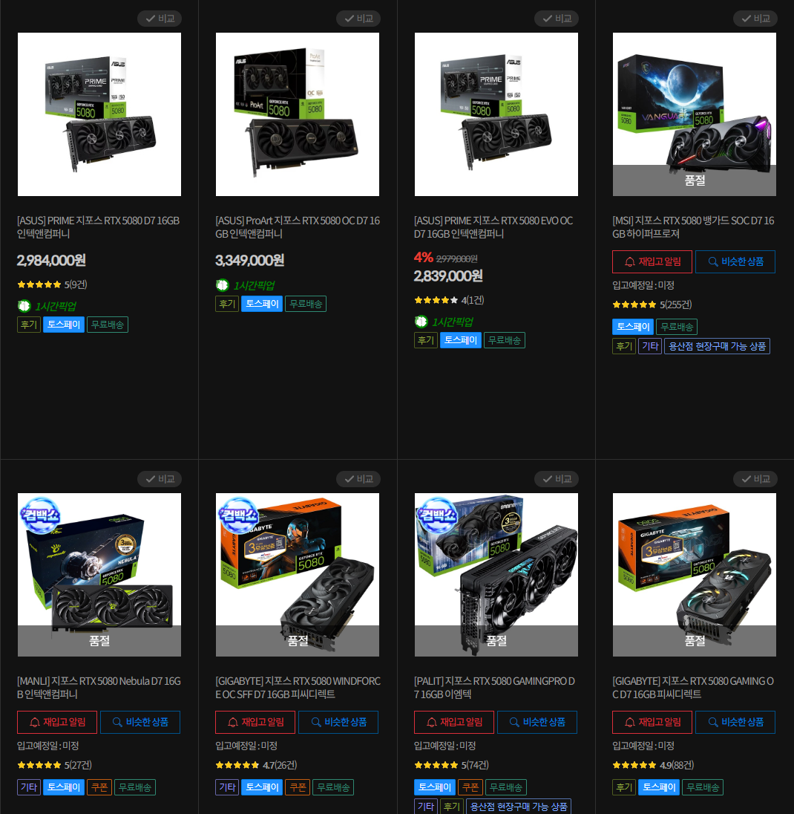
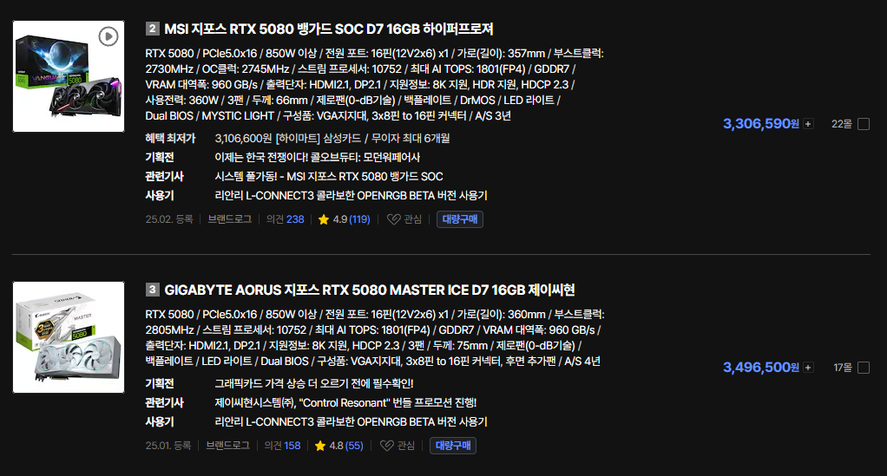
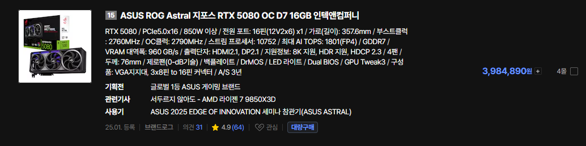
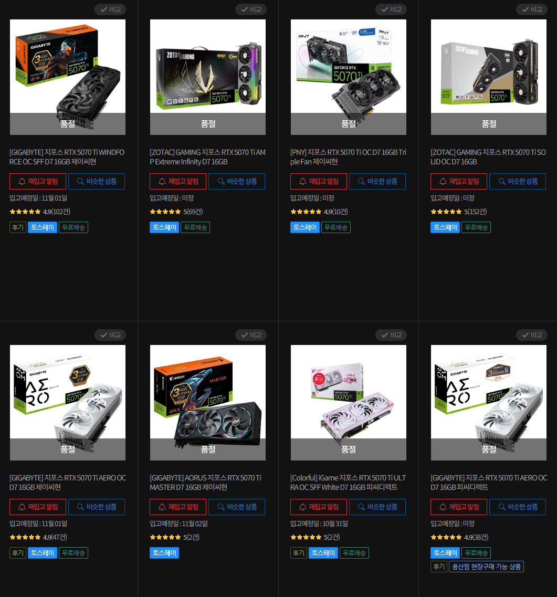
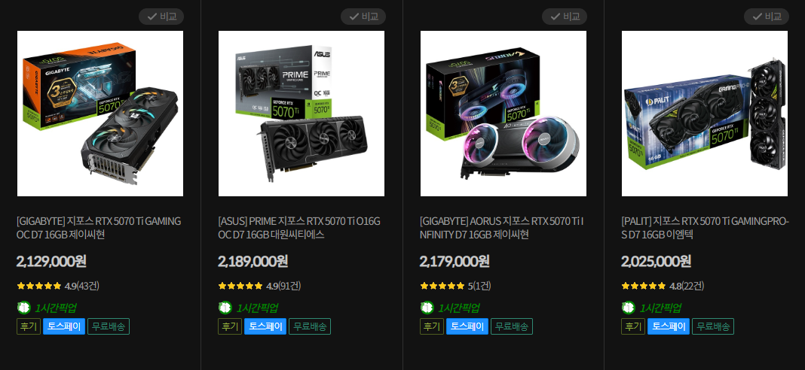

컴퓨존기준 가격 선반영한 ASUS 프라임(하급기) 이랑 프로아트(최상급기) 빼고 전 재고 소멸


다나와는 상급기 기준으로 350만원까지 치고 올라감
5080 아스트랄은 레알 5090 역대가 근처까지 가격 올라간거는덤
그리고 그다음은

70샤 임 ㅋㅋㅋㅋㅋ
지금 최상급기는 거의 재고 소진되었고

남아있는것도 가격이 미쳤음 70샤 200만원시대 돌입함
한줄요약 : 그래픽카드가 재테크 수단이 되는 미친 AI시대
이런데 플스6나 헬릭스가 200만원 언저리에 출시가 가능한가